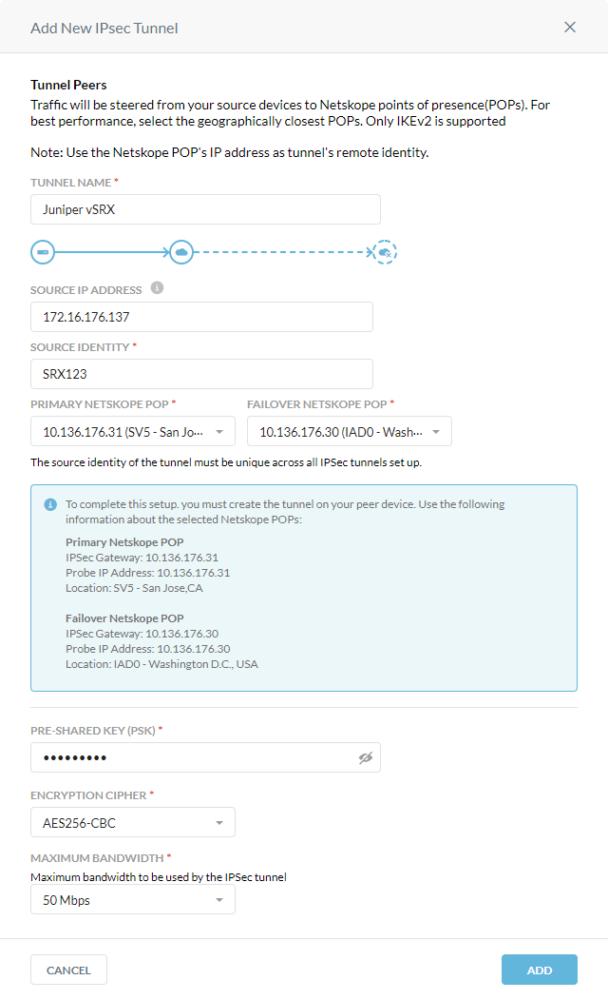

Netskope IPSec with Juniper SRX
Netskope supports Internet Protocol Security (IPSec) tunnels as a traffic steering method. IPSec tunnels allow you to route web traffic (port 80 and 443) to Netskope using logical tunnel interfaces that terminate to a Netskope IPSec gateway. When you create IPSec tunnels in the Netskope UI, Netskope provides parameters for configuring the tunnels on your firewall. The IPSec configuration below utilizes Junos OS commands and concepts.
This guide illustrates how to configure IPSec tunnels between Netskope and the Juniper vSRX virtual firewall running Junos OS version 15.1X49-D75.5. IPSec has two modes: tunnel mode and transport mode. This guide is for tunnel mode. To learn more about the CLI steps in Junos OS, see the Juniper documentation.
Prerequisites
Before configuring IPSec, review the prerequisites.
To create the IPSec tunnels for Juniper SRX or vSRX in the Netskope UI:
Go to Settings > Security Cloud Platform > IPSec.
Click Add New Tunnel.
In the Add New IPSec Tunnel window:
Tunnel Name: Enter a name for the IPSec tunnel.
Source IP Address: (Optional) Enter the source peer IP address (i.e., exit public IP) of the Juniper firewall that Netskope will receive packets from. Netskope identifies traffic belonging to your organization through your router or firewall IP addresses.
Source Identity: Enter an IP address, a fully-qualified domain name (FQDN), or an ID in email address format. For example, 1.1.1.1 or sourcelocation@company.com. The router or firewall uses the source identity for authentication during Internet Key Exchange (IKE).
Primary Netskope POP: Select the primary Netskope point of presence (POP) closest to you, and copy the IPSec Gateway IP address. You need this information to establish the primary IPSec tunnel on your Juniper firewall. For optimal performance, Netskope recommends using the geographically closest POPs and configuring at least two tunnels for each egress location in your network.
Failover Netskope POP: Select the backup Netskope POP closest to you, and copy the IPSec Gateway IP address. You need this information to establish the backup IPSec tunnel on your Juniper firewall. For optimal performance, Netskope recommends using the geographically closest POPs and configuring at least two tunnels for each egress location in your network.
Pre-Shared Key (PSK): Enter the pre-shared key that both sides of the tunnel will use to authenticate one another. The PSK must be unique for each tunnel.
Encryption Cipher: Select an encryption algorithm for the IPSec tunnel.
Maximum Bandwidth: Enter the maximum bandwidth for the IPSec tunnel. The tunnel size can be up to 250 Mbps.
Click Add.
Enter the following commands:
set interfaces ge-0/0/0 unit 0 family inet address 172.16.176.137/26 set interfaces ge-0/0/1 unit 0 family inet address 172.16.176.204/26 set interfaces st0 unit 0 family inet address 10.11.11.10/24 set interfaces st0 unit 1 family inet address 20.11.11.10/24
You can use static routing to route traffic through the IPSec tunnels to Netskope.
Enter the following commands:
set routing-options static route 0.0.0.0/0 next-hop 172.16.176.129 set routing-options static route 185.199.0.0/16 next-hop st0.0 set routing-options static route 185.199.0.0/16 next-hop st0.1 set routing-options static route 9.8.7.6/32 next-hop st0.0 set routing-options static route 9.8.7.6/32 next-hop st0.1 set routing-options static route 164.100.133.0/24 next-hop st0.0 set routing-options static route 164.100.133.0/24 next-hop st0.1 set routing-options static route 8.8.8.8/32 next-hop st0.0 set routing-options static route 8.8.8.8/32 next-hop st0.1
The IKE proposal is a list of security parameters that protects the IKE negotiation during Phase 1.
Enter the following commands:
set security ike proposal IKE_PROP authentication-method pre-shared-keys set security ike proposal IKE_PROP dh-group group14 set security ike proposal IKE_PROP encryption-algorithm aes-256-cbc set security ike proposal IKE_PROP lifetime-seconds 7200
The IKE policy defines the IKE mode, PSK of the peers, and the IKE proposal used during the IKE negotiation.
Enter the following commands:
set security ike policy IKE_POL mode main set security ike policy IKE_POL proposals IKE_PROP set security ike policy IKE_POL pre-shared-key ascii-text "$0987654321$"
You need the IPSec Gateway IP addresses of the Netskope POPs you copied in the Netskope UI.
Enter the following commands:
set security ike gateway IKE_GW ike-policy IKE_POL set security ike gateway IKE_GW address 10.136.176.31 set security ike gateway IKE_GW local-identity hostname srx123 set security ike gateway IKE_GW remote-identity inet 10.136.176.31 set security ike gateway IKE_GW external-interface ge-0/0/0.0 set security ike gateway IKE_GW version v2-only set security ike gateway IKE_GW2 ike-policy IKE_POL set security ike gateway IKE_GW2 address 10.136.176.30 set security ike gateway IKE_GW2 local-identity hostname srx123 set security ike gateway IKE_GW2 remote-identity inet 10.136.176.30 set security ike gateway IKE_GW2 external-interface ge-0/0/0.0 set security ike gateway IKE_GW2 version v2-only
The IPSec proposal is a list of protocols and algorithms that negotiates the IPSec peer.
Enter the following commands:
set security ipsec proposal IPSEC_PROP protocol esp set security ipsec proposal IPSEC_PROP authentication-algorithm hmac-sha1-96 set security ipsec proposal IPSEC_PROP lifetime-seconds 7200
The IPSec policy defines perfect forward secrecy (PFS) and the IPSec proposal used during the IPSec negotiation.
Enter the following commands:
set security ipsec policy IPSEC_POL perfect-forward-secrecy keys group14 set security ipsec policy IPSEC_POL proposals IPSEC_PROP
Create two IPSec VPN tunnels that are binded to your tunnel interfaces and IKE gateways.
Enter the following commands:
set security ipsec vpn IPSEC_VPN bind-interface st0.0 set security ipsec vpn IPSEC_VPN ike gateway IKE_GW set security ipsec vpn IPSEC_VPN ike proxy-identity local 172.16.176.192/26 set security ipsec vpn IPSEC_VPN ike proxy-identity remote 0.0.0.0/0 set security ipsec vpn IPSEC_VPN ike proxy-identity service any set security ipsec vpn IPSEC_VPN ike ipsec-policy IPSEC_POL set security ipsec vpn IPSEC_VPN establish-tunnels immediately set security ipsec vpn IPSEC_VPN2 bind-interface st0.1 set security ipsec vpn IPSEC_VPN2 ike gateway IKE_GW2 set security ipsec vpn IPSEC_VPN2 ike proxy-identity local 172.16.176.192/26 set security ipsec vpn IPSEC_VPN2 ike proxy-identity remote 0.0.0.0/0 set security ipsec vpn IPSEC_VPN2 ike proxy-identity service any set security ipsec vpn IPSEC_VPN2 ike ipsec-policy IPSEC_POL set security ipsec vpn IPSEC_VPN2 establish-tunnels immediately
Enter the following command:
set security policies default-policy permit-all
Configure a security policy to permit traffic from the source zone to the destination zone.
Enter the following commands:
set security zones security-zone all host-inbound-traffic system-services all set security zones security-zone all host-inbound-traffic protocols all set security zones security-zone all interfaces all
Below is a sample CLI IPSec tunnel configuration for Juniper SRX firewalls:
root> show configuration | display set set version 15.1X49-D75.5 set system root-authentication encrypted-password "1234567890" set system name-server 172.16.254.11 source-address 172.16.176.137 set system services ssh set security ike proposal IKE_PROP authentication-method pre-shared-keys set security ike proposal IKE_PROP dh-group group14 set security ike proposal IKE_PROP encryption-algorithm aes-256-cbc set security ike proposal IKE_PROP lifetime-seconds 7200 set security ike policy IKE_POL mode main set security ike policy IKE_POL proposals IKE_PROP set security ike policy IKE_POL pre-shared-key ascii-text "$9$17mRclevLNVY1RSeKM7Ns24Zi.Tz6" set security ike gateway IKE_GW ike-policy IKE_POL set security ike gateway IKE_GW address 10.136.176.31 set security ike gateway IKE_GW local-identity hostname srx123 set security ike gateway IKE_GW remote-identity inet 10.136.176.31 set security ike gateway IKE_GW external-interface ge-0/0/0.0 set security ike gateway IKE_GW version v2-only set security ike gateway IKE_GW2 ike-policy IKE_POL set security ike gateway IKE_GW2 address 10.136.176.30 set security ike gateway IKE_GW2 local-identity hostname srx123 set security ike gateway IKE_GW2 remote-identity inet 10.136.176.30 set security ike gateway IKE_GW2 external-interface ge-0/0/0.0 set security ike gateway IKE_GW2 version v2-only set security ipsec proposal IPSEC_PROP protocol esp set security ipsec proposal IPSEC_PROP authentication-algorithm hmac-sha1-96 set security ipsec proposal IPSEC_PROP lifetime-seconds 7200 set security ipsec policy IPSEC_POL perfect-forward-secrecy keys group14 set security ipsec policy IPSEC_POL proposals IPSEC_PROP set security ipsec vpn IPSEC_VPN bind-interface st0.0 set security ipsec vpn IPSEC_VPN ike gateway IKE_GW set security ipsec vpn IPSEC_VPN ike proxy-identity local 172.16.176.192/26 set security ipsec vpn IPSEC_VPN ike proxy-identity remote 0.0.0.0/0 set security ipsec vpn IPSEC_VPN ike proxy-identity service any set security ipsec vpn IPSEC_VPN ike ipsec-policy IPSEC_POL set security ipsec vpn IPSEC_VPN establish-tunnels immediately set security ipsec vpn IPSEC_VPN2 bind-interface st0.1 set security ipsec vpn IPSEC_VPN2 ike gateway IKE_GW2 set security ipsec vpn IPSEC_VPN2 ike proxy-identity local 172.16.176.192/26 set security ipsec vpn IPSEC_VPN2 ike proxy-identity remote 0.0.0.0/0 set security ipsec vpn IPSEC_VPN2 ike proxy-identity service any set security ipsec vpn IPSEC_VPN2 ike ipsec-policy IPSEC_POL set security ipsec vpn IPSEC_VPN2 establish-tunnels immediately set security policies default-policy permit-all set security zones security-zone all host-inbound-traffic system-services all set security zones security-zone all host-inbound-traffic protocols all set security zones security-zone all interfaces all set interfaces ge-0/0/0 unit 0 family inet address 172.16.176.137/26 set interfaces ge-0/0/1 unit 0 family inet address 172.16.176.204/26 set interfaces st0 unit 0 family inet address 10.11.11.10/24 set interfaces st0 unit 1 family inet address 20.11.11.10/24 set routing-options static route 0.0.0.0/0 next-hop 172.16.176.129 set routing-options static route 185.199.0.0/16 next-hop st0.0 set routing-options static route 185.199.0.0/16 next-hop st0.1 set routing-options static route 9.8.7.6/32 next-hop st0.0 set routing-options static route 9.8.7.6/32 next-hop st0.1 set routing-options static route 164.100.133.0/24 next-hop st0.0 set routing-options static route 164.100.133.0/24 next-hop st0.1 set routing-options static route 8.8.8.8/32 next-hop st0.0 set routing-options static route 8.8.8.8/32 next-hop st0.1
You can use any of the following commands to troubleshoot the IPSec tunnels on the Juniper firewall:
Enter the following commands to view information about the IKE security associations (SAs):
root> show security ike security-associations
Index State Initiator cookie Responder cookie Mode Remote Address
3267788 UP 7ff0b8be90fca7da 188629ab03675f57 IKEv2 10.136.176.30
3267789 UP 4b49d6cc1476a53b 009f5e70a44f767f IKEv2 10.136.176.31
root> show security ike security-associations detail
IKE peer 10.136.176.30, Index 3267788, Gateway Name: IKE_GW2
Role: Initiator, State: UP
Initiator cookie: 7ff0b8be90fca7da, Responder cookie: 188629ab03675f57
Exchange type: IKEv2, Authentication method: Pre-shared-keys
Local: 172.16.176.137:4500, Remote: 10.136.176.30:4500
Lifetime: Expires in 5803 seconds
Reauth Lifetime: Disabled
IKE Fragmentation: Enabled, Size: 576
Peer ike-id: 10.136.176.30
Xauth assigned IP: 0.0.0.0
Algorithms:
Authentication : hmac-sha1-96
Encryption : aes256-cbc
Pseudo random function: hmac-sha1
Diffie-Hellman group : DH-group-14
Traffic statistics:
Input bytes : 0
Output bytes : 0
Input packets: 0
Output packets: 0
Input fragmentated packets: 0
Output fragmentated packets: 0
IPSec security associations: 0 created, 0 deleted
Phase 2 negotiations in progress: 1
Negotiation type: Quick mode, Role: Initiator, Message ID: 0
Local: 172.16.176.137:4500, Remote: 10.136.176.30:4500
Local identity: srx123
Remote identity: 10.136.176.30
Flags: IKE SA is created
IKE peer 10.136.176.31, Index 3267789, Gateway Name: IKE_GW
Role: Initiator, State: UP
Initiator cookie: 4b49d6cc1476a53b, Responder cookie: 009f5e70a44f767f
Exchange type: IKEv2, Authentication method: Pre-shared-keys
Local: 172.16.176.137:4500, Remote: 10.136.176.31:4500
Lifetime: Expires in 6348 seconds
Reauth Lifetime: Disabled
IKE Fragmentation: Enabled, Size: 576
Peer ike-id: 10.136.176.31
Xauth assigned IP: 0.0.0.0
Algorithms:
Authentication : hmac-sha1-96
Encryption : aes256-cbc
Pseudo random function: hmac-sha1
Diffie-Hellman group : DH-group-14
Traffic statistics:
Input bytes : 0
Output bytes : 0
Input packets: 0
Output packets: 0
Input fragmentated packets: 0
Output fragmentated packets: 0
IPSec security associations: 0 created, 0 deleted
Phase 2 negotiations in progress: 1
Negotiation type: Quick mode, Role: Initiator, Message ID: 0
Local: 172.16.176.137:4500, Remote: 10.136.176.31:4500
Local identity: srx123
Remote identity: 10.136.176.31
Flags: IKE SA is createdEnter the following commands to view information about the IPSec security associations (SAs):
root> show security ipsec security-associations
Total active tunnels: 2
ID Algorithm SPI Life:sec/kb Mon lsys Port Gateway
<131073 ESP: sha1 a340c94f 6268/ unlim - root 4500 10.136.176.31
>131073 ESP: sha1 ca7ab31e 6268/ unlim - root 4500 10.136.176.31
<131074 ESP: sha1 62db2a02 5399/ unlim - root 4500 10.136.176.30
>131074 ESP: sha1 ca197fcb 5399/ unlim - root 4500 10.136.176.30
root> show security ipsec security-associations detail
ID: 131073 Virtual-system: root, VPN Name: IPSEC_VPN
Local Gateway: 172.16.176.137, Remote Gateway: 10.136.176.31
Local Identity: ipv4_subnet(any:0,[0..7]=172.16.176.192/26)
Remote Identity: ipv4_subnet(any:0,[0..7]=0.0.0.0/0)
Version: IKEv2
DF-bit: clear, Copy-Outer-DSCP Disabled, Bind-interface: st0.0
Port: 4500, Nego#: 66, Fail#: 0, Def-Del#: 0 Flag: 0x600a29
Tunnel events:
Wed Jul 14 2021 06:03:30: IKE SA rekey successfully completed (1 times)
Wed Jul 14 2021 06:01:45: IPSec SA rekey successfully completed (1 times)
Wed Jul 14 2021 04:13:18: IPSec SA negotiation successfully completed (1 times)
Wed Jul 14 2021 04:13:18: IKE SA negotiation successfully completed (1 times)
Wed Jul 14 2021 04:13:17: IPSec SAs cleared as corresponding IKE SA deleted (1 times)
Wed Jul 14 2021 03:48:36: IKE SA rekey successfully completed (4 times)
Wed Jul 14 2021 03:25:11: IPSec SA rekey successfully completed (4 times)
Tue Jul 13 2021 20:29:25: IPSec SA negotiation successfully completed (1 times)
Tue Jul 13 2021 20:29:25: IKE SA negotiation successfully completed (13 times)
Tue Jul 13 2021 20:28:27: IPSec SAs cleared as corresponding IKE SA deleted (1 times)
Tue Jul 13 2021 20:28:25: IPSec SA negotiation successfully completed (1 times)
Tue Jul 13 2021 20:27:27: IPSec SAs cleared as corresponding IKE SA deleted (1 times)
Tue Jul 13 2021 19:53:53: IKE SA rekey successfully completed (1 times)
Tue Jul 13 2021 18:04:23: IKE SA negotiation successfully completed (10 times)
Tue Jul 13 2021 17:13:41: IKE SA rekey successfully completed (2 times)
Tue Jul 13 2021 13:34:21: IKE SA negotiation successfully completed (6 times)
Direction: inbound, SPI: a340c94f, AUX-SPI: 0
, VPN Monitoring: -
Hard lifetime: Expires in 6236 seconds
Lifesize Remaining: Unlimited
Soft lifetime: Expires in 5672 seconds
Mode: Tunnel(0 0), Type: dynamic, State: installed
Protocol: ESP, Authentication: hmac-sha1-96, Encryption: NULL
Anti-replay service: counter-based enabled, Replay window size: 64
Direction: outbound, SPI: ca7ab31e, AUX-SPI: 0
, VPN Monitoring: -
Hard lifetime: Expires in 6236 seconds
Lifesize Remaining: Unlimited
Soft lifetime: Expires in 5672 seconds
Mode: Tunnel(0 0), Type: dynamic, State: installed
Protocol: ESP, Authentication: hmac-sha1-96, Encryption: NULL
Anti-replay service: counter-based enabled, Replay window size: 64
ID: 131074 Virtual-system: root, VPN Name: IPSEC_VPN2
Local Gateway: 172.16.176.137, Remote Gateway: 10.136.176.30
Local Identity: ipv4_subnet(any:0,[0..7]=172.16.176.192/26)
Remote Identity: ipv4_subnet(any:0,[0..7]=0.0.0.0/0)
Version: IKEv2
DF-bit: clear, Copy-Outer-DSCP Disabled, Bind-interface: st0.1
Port: 4500, Nego#: 53, Fail#: 0, Def-Del#: 0 Flag: 0x600a29
Tunnel events:
Wed Jul 14 2021 05:54:25: IKE SA rekey successfully completed (2 times)
Wed Jul 14 2021 05:47:16: IPSec SA rekey successfully completed (2 times)
Wed Jul 14 2021 02:15:29: IPSec SA negotiation successfully completed (1 times)
Wed Jul 14 2021 02:15:29: IKE SA negotiation successfully completed (24 times)
Wed Jul 14 2021 02:14:32: IPSec SAs cleared as corresponding IKE SA deleted (1 times)
Wed Jul 14 2021 02:14:29: IPSec SA negotiation successfully completed (1 times)
Wed Jul 14 2021 02:13:32: IPSec SAs cleared as corresponding IKE SA deleted (1 times)
Wed Jul 14 2021 02:13:29: IPSec SA negotiation successfully completed (1 times)
Wed Jul 14 2021 02:12:32: IPSec SAs cleared as corresponding IKE SA deleted (1 times)
Wed Jul 14 2021 02:12:29: IPSec SA negotiation successfully completed (1 times)
Wed Jul 14 2021 01:21:18: IKE SA rekey successfully completed (1 times)
Tue Jul 13 2021 23:31:27: IKE SA negotiation successfully completed (1 times)
Tue Jul 13 2021 23:00:25: IKE SA rekey successfully completed (1 times)
Tue Jul 13 2021 21:10:25: IKE SA negotiation successfully completed (18 times)
Tue Jul 13 2021 20:00:23: IKE SA rekey successfully completed (1 times)
Tue Jul 13 2021 18:10:23: IKE SA negotiation successfully completed (5 times)
Direction: inbound, SPI: 62db2a02, AUX-SPI: 0
, VPN Monitoring: -
Hard lifetime: Expires in 5367 seconds
Lifesize Remaining: Unlimited
Soft lifetime: Expires in 4780 seconds
Mode: Tunnel(0 0), Type: dynamic, State: installed
Protocol: ESP, Authentication: hmac-sha1-96, Encryption: NULL
Anti-replay service: counter-based enabled, Replay window size: 64
Direction: outbound, SPI: ca197fcb, AUX-SPI: 0
, VPN Monitoring: -
Hard lifetime: Expires in 5367 seconds
Lifesize Remaining: Unlimited
Soft lifetime: Expires in 4780 seconds
Mode: Tunnel(0 0), Type: dynamic, State: installed
Protocol: ESP, Authentication: hmac-sha1-96, Encryption: NULL
Anti-replay service: counter-based enabled, Replay window size: 64
Client Logs
nsadmin@VSRX-Ubuntu:~$ curl -v -k https://file-examples-com.github.io/uploads/2017/10/file-example_PDF_1MB.pdf 2>&1 | grep issuer:
issuer: C=IN,ST=Karnataka,L=Bangalore,O=CFW,OU=e02224c3afe0020a0ec95f4e8251c05e,CN=ca.dineshks.inskope.com,EMAIL=certadmin@netskope.com
nsadmin@VSRX-Ubuntu:~$
nsadmin@VSRX-Ubuntu:~$
nsadmin@VSRX-Ubuntu:~$ curl -v -k --silent https://ssp.karnataka.gov.in:8080 2>&1 | grep issuer:
issuer: C=IN,ST=Karnataka,L=Bangalore,O=CFW,OU=e02224c3afe0020a0ec95f4e8251c05e,CN=ca.dineshks.inskope.com,EMAIL=certadmin@netskope.com
nsadmin@VSRX-Ubuntu:~$ ping 8.8.8.8
PING 8.8.8.8 (8.8.8.8) 56(84) bytes of data.
64 bytes from 8.8.8.8: icmp_seq=1 ttl=115 time=78.2 ms
64 bytes from 8.8.8.8: icmp_seq=2 ttl=115 time=77.4 ms
64 bytes from 8.8.8.8: icmp_seq=3 ttl=115 time=77.2 ms
64 bytes from 8.8.8.8: icmp_seq=4 ttl=115 time=77.3 ms
^C
--- 8.8.8.8 ping statistics ---
4 packets transmitted, 4 received, 0% packet loss, time 3004ms
rtt min/avg/max/mdev = 77.230/77.575/78.253/0.524 ms
nsadmin@VSRX-Ubuntu:~$ ^C
nsadmin@VSRX-Ubuntu:~$ ping 9.8.7.6
PING 9.8.7.6 (9.8.7.6) 56(84) bytes of data.
64 bytes from 9.8.7.6: icmp_seq=1 ttl=60 time=76.3 ms
64 bytes from 9.8.7.6: icmp_seq=2 ttl=60 time=76.2 ms
64 bytes from 9.8.7.6: icmp_seq=3 ttl=60 time=76.9 ms
^C
--- 9.8.7.6 ping statistics ---
4 packets transmitted, 3 received, 25% packet loss, time 3004ms
rtt min/avg/max/mdev = 76.292/76.545/76.987/0.447 ms
nsadmin@VSRX-Ubuntu:~$ ^C